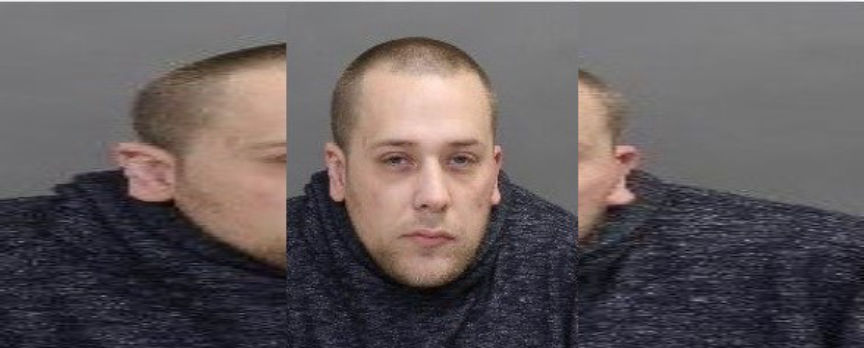
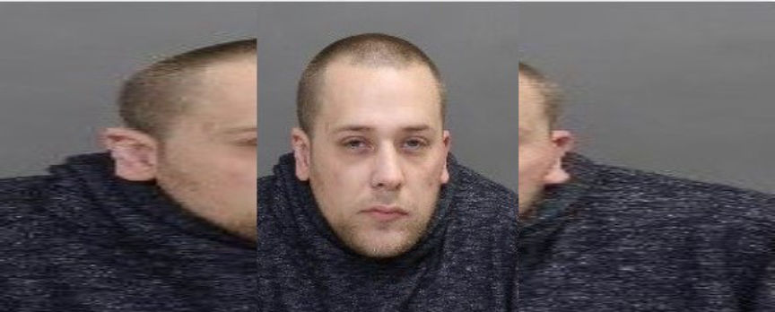

Fentanyl Vendor "CDNVEN" Indicted
~2 min read | Published on 2024-01-11, tagged Darkweb-Vendor, Fentanyl using 275 words.
A grand jury in New Jersey indicted a Canadian man suspected of being one of the most prolific fentanyl vendors on the dark web.

From June 2019 through September 2020, 38-year-old Michael C. Wozney of Ontario, Canada, distributed fentanyl through multiple dark web marketplaces under the username, "CDNVEN." Wozney also distributed the drugs through his vendor shop.
Investigatigators established that Wozney claimed the drugs he sold were “close to pure” and “DANGEROUS LEVEL.” He completed hundreds of orders on Empire Market.
On his vendor shop, Wozney asked for payment in Bitcoin. Blockchain analysis revealed that the bitcoin he received from his buyers ended up in an account registered under his name on an undisclosed cryptocurrency exchange.
During the investigations, the investigators intercepted multiple packages shipped by Wozney.
Authorities in Canada arrested him in March 2020 following 19 months of manhunt. The investigations were launched in August 2018 after investigators linked him to the importation of fentanyl into Canada. On August 9, 2018, he fled in his car after avoiding arrest at Toronto Airport. A Canada-wide arrest warrant was as a result issued against him.
Following his arrest in 2020, Canadian authorities charged him with 16 counts including, three counts of unlawfully importing fentanyl into Canada, one count of unlawfully importing amphetamines into Canada, and two counts of possession of fentanyl for trafficking.
On January 9, 2024, Wozney was charged with seven counts of distribution of and possession with intent to distribute a controlled substance and seven counts of importation of a controlled substance into the United States, in a 14-count indictment.
Each charge carries a maximum sentence of 20 years in prison and a $1 million fine.

Michael C. Wozney
From June 2019 through September 2020, 38-year-old Michael C. Wozney of Ontario, Canada, distributed fentanyl through multiple dark web marketplaces under the username, "CDNVEN." Wozney also distributed the drugs through his vendor shop.
Investigatigators established that Wozney claimed the drugs he sold were “close to pure” and “DANGEROUS LEVEL.” He completed hundreds of orders on Empire Market.
On his vendor shop, Wozney asked for payment in Bitcoin. Blockchain analysis revealed that the bitcoin he received from his buyers ended up in an account registered under his name on an undisclosed cryptocurrency exchange.
During the investigations, the investigators intercepted multiple packages shipped by Wozney.
Authorities in Canada arrested him in March 2020 following 19 months of manhunt. The investigations were launched in August 2018 after investigators linked him to the importation of fentanyl into Canada. On August 9, 2018, he fled in his car after avoiding arrest at Toronto Airport. A Canada-wide arrest warrant was as a result issued against him.
Following his arrest in 2020, Canadian authorities charged him with 16 counts including, three counts of unlawfully importing fentanyl into Canada, one count of unlawfully importing amphetamines into Canada, and two counts of possession of fentanyl for trafficking.
On January 9, 2024, Wozney was charged with seven counts of distribution of and possession with intent to distribute a controlled substance and seven counts of importation of a controlled substance into the United States, in a 14-count indictment.
Each charge carries a maximum sentence of 20 years in prison and a $1 million fine.